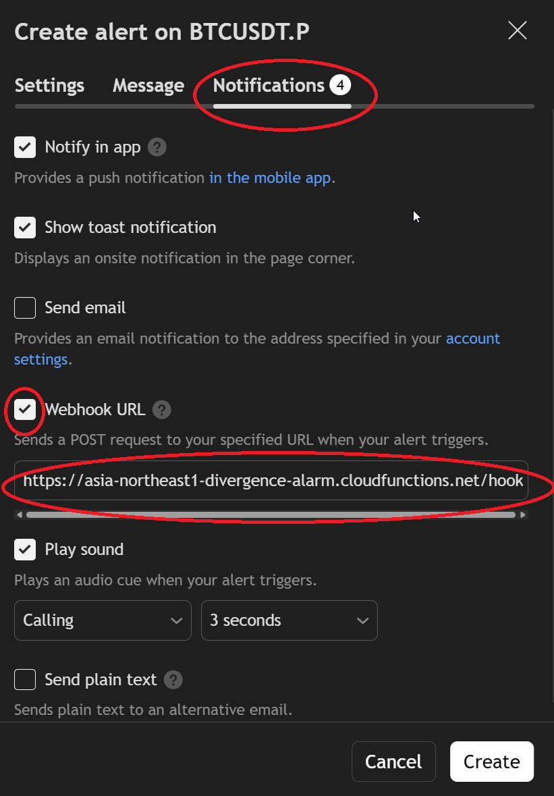

Гайд по сповіщеннях за ключовими словами для DivAlarm
Виберіть ключові слова зі сповіщень телефону або повідомлень webhook TradingView. Ви можете використовувати ті ж правила для тривог, комбінацій сигналів і автоордерів на біржі.
Тест з'єднання TradingView та налаштування на ПК
📋 Зміст
Виберіть джерело ключових слів
Відкрийте Сповіщення за ключовими словами · Автоматичні ордери і виберіть джерело зверху сторінки. Натисніть ? біля селектора для довідки. Обидва режими використовують ваші збережені ключові слова, комбінації та налаштування тривог. Кожен акаунт може спробувати 5 спрацювань тривог за ключовими словами безкоштовно, без картки — це спільний ліміт для всіх режимів на весь час. Автоматичні ордери залишаються лише для Pro.
5 безкоштовних спрацювань на акаунт: Ключові слова зі сповіщень телефона, ключові слова вебхуків і комбіновані тривоги мають спільний ліміт на все життя. Використання зараховується, коли відповідна тривога успішно запланована на вашому телефоні. Невідповідні повідомлення, дублікати та невдалі спроби не знімають кредит. Для перевірки безкоштовних використань потрібен інтернет.
Ліміт відокремлений від 7 загальних тривог, не скидається після перевстановлення і не включає автоматичні ордери. Ваші правила залишаються збереженими після всіх 5 використань; оберіть Pro для продовження.
Ключові слова зі сповіщень телефона (Android)
- Виберіть Ключові слова зі сповіщень телефона.
- Відкрийте налаштування доступу до сповіщень зі сторінки та дозвольте DivAlarm читати сповіщення.
- Додайте текст у Включити ключове слово, який зустрічається у заголовку або тілі сповіщення, яке ви хочете відстежити.
- Коли надходить відповідне сповіщення, DivAlarm застосовує ваші налаштовані тривоги, комбінації та правила автоордерів.
Доступ до сповіщень має залишатися увімкненим для читання інших додатків. DivAlarm може знаходити лише текст, який надає Android; згруповані підсумки, повтори та сповіщення або результати ордерів, створені DivAlarm, ігноруються. Для повідомлень перевіряється лише найновіше.
Вхідні сигнали самого DivAlarm також можуть запускати тривоги за ключовими словами та ордери в цьому режимі. Діють усі увімкнені фільтри. Ви можете й надалі використовувати ключові слова сигналів @D, @E та @P.
Ключові слова вебхуків
Виберіть Ключові слова вебхуків, щоб отримувати повідомлення, надіслані на ваш персональний Webhook URL, включаючи сповіщення TradingView. URL та кнопка копіювання з’являються лише в цьому режимі. Дотримуйтесь кроків налаштування TradingView нижче.
Перемикання режимів зберігає ваші правила. У телефонному режимі webhook-повідомлення не запускають тривоги чи ордери на цьому пристрої. Існуючі користувачі починають у режимі webhook, тому їхнє поточне налаштування зберігається до перемикання.
Читання сповіщень інших додатків — це функція Android; вона недоступна на iOS чи у вебверсії.
DivAlarm × TradingView – Приклади Webhook
Ці відео показують робочий процес Ключові слова вебхуків. Оберіть це джерело перед виконанням кроків із Webhook URL.
Створюючи ключ Bitget, виберіть Read-write. Увімкніть і Futures order для розміщення ордерів, і Futures Holdings для перегляду позицій.
🔔 Правила ключових слів і налаштування TradingView Webhook
У Сповіщення за ключовими словами · Автоматичні ордери додайте текст для пошуку у Включити ключове слово. Телефонний режим перевіряє заголовки та тіла сповіщень; webhook — текст вхідного webhook. Оберіть джерело перед тестуванням правила.
Додавання Webhook у TradingView
Виберіть Ключові слова вебхуків, додайте AA у Включити ключове слово і увімкніть тривогу. Для будь-якого правила чи комбінації, що відповідає AA, залишайте автоордери вимкненими під час тестування реального сповіщення TradingView. Розгорніть Webhook URL, щоб скопіювати персональний URL. Натисніть ? біля заголовка URL для ілюстрованих кроків.

Клацніть правою кнопкою миші на індикаторі, з якого хочете отримувати сигнали у TradingView, і виберіть «Add Alert on ~».


Відкрийте Сповіщення, увімкніть Webhook URL, вставте ваш персональний URL і виберіть Застосувати.
Ви можете повторно використовувати ту саму URL-адресу для інших сповіщень. Якщо нове сповіщення вже містить вашу URL-адресу, переконайтеся, що прапорець увімкнено, а адреса вказана правильно. Перевіряйте кожне існуюче сповіщення окремо.
Для одноразового тесту ціни виберіть Ціна → Зовні каналу і Лише один раз. Встановіть обидві межі з одного боку від поточної ціни. Наприклад, якщо ціна 100, використайте нижню межу 98 і верхню межу 99.

TradingView і скріншоти додатку використовують AAA, щоб показати, куди вводити ключове слово. Для цього тесту введіть AA Webhook test у Повідомлення або додайте своє зареєстроване ключове слово AA до існуючого повідомлення, потім застосуйте зміни.
Виберіть Створити. Коли умова виконається, перевірте журнал сповіщень TradingView і тривогу на вашому телефоні.
Отримання сповіщень TradingView у додатку

Залиште обраним Ключові слова вебхуків. Повідомлення з AA викликає тривогу, яку ви увімкнули для цього ключового слова. Вимкніть тестове правило AA після завершення.
Щоб перевірити доставку з сервера на ваш Android телефон, надішліть тестовий сигнал із перевірки з'єднання. Ця діагностика пропускає правила за ключовими словами й ордери біржі та не використовує ваш ліміт безкоштовних тривог.
🤖 Автоматичні ордери за сповіщеннями за ключовими словами

З Pro ви можете додавати автоордери до окремих правил за ключовими словами або комбінацій. Тримайте автоордери вимкненими для правил лише зі сповіщеннями. Якщо увімкнено, збіг із вибраного джерела або відповідний сигнал DivAlarm може розмістити реальний ордер на вашій біржі.

Введіть API-ключі вашої біржі у Налаштування → Налаштування автоордерів. Додаток Android підтримує Binance, Bybit, OKX, Bitget, Gate та Bitunix.
Натисніть кошик праворуч від рядка ключового слова, щоб вибрати біржу, символ і налаштування ордеру, потім увімкніть автоордери для цього правила. Якщо ви використовуєте Bitget, перевірте дві необхідні дозволи у Налаштуваннях API-ключа біржі.
📝 Реєстрація сигналів DivAlarm як ключових слів

Власні сигнали DivAlarm можуть запускати тривоги за ключовими словами, комбінації та автоордери в обох режимах введення. Зареєструйте їх у форматах нижче. Оригінальні увімкнені фільтри сигналу залишаються чинними; додавання ключового слова не активує вимкнений фільтр сигналу.
RSI-дивергенція (@D):@D@Kind@Direction@Status@MainTimeframe[@SubTimeframe]
Значення статусу: early_completed, early_confirmed, confirmed та forming. Другий таймфрейм використовується для сигналів зі статусом Forming.
Додаткові індикатори (@E):@E@Kind@TitleKeyword@Timeframe
Цінові сповіщення (@P):@P@Kind@TitleKeyword
Існуючі правила @D без розпізнаного статусу залишаються підтримуваними; їх четверте й п’яте поля зберігають значення основного та додаткового таймфрейму.
Типи тривог:
@D— фільтри RSI-дивергенції@E— додаткові індикатори@P— цінові сповіщення
Приклади
@D@BTC@Bull@forming@5m@1m
→ RSI Divergence, BTCUSDT.P, заголовок містить "Bull", Forming, основний 5m, додатковий 1m
@D@ETH@Bear@confirmed@15m
→ RSI Divergence, ETHUSDT.P, заголовок містить "Bear", Confirmed, 15m, без додаткового таймфрейму

@E@BTC@Sell@30m → Додатковий індикатор, монета BTC, заголовок містить "Sell", 30m
@E@BTC@Buy@1h
@E@ETH@Breakout@15m
@E@BTC@Breakdown@5m
@E@BTC@Near Support@1m
@E@BTC@Near Resistance@5m
@E@BTC@EMA50@1h
@P@BTC@Up → Цінове сповіщення, монета BTC, заголовок містить "Up"
@P@ETH@Down
🔀 Сповіщення-комбінації сигналів
Комбінуйте відповідні push-сповіщення або webhook-повідомлення з вибраного джерела з відповідними сигналами DivAlarm для створення комбінаційної тривоги. Правила за ключовими словами та налаштування вікна часу працюють у обох режимах.

Встановіть умови, які мають бути виконані у межах вікна часу для спрацювання тривоги.
Приклад:
Протягом 1 години 30 хвилин:
• 'Сповіщення з ключовим словом A' ТА
• 'Сповіщення з ключовим словом B' обидва надходять, АБО
• 'Сповіщення з ключовим словом C' надходить
Введіть (1&2)|3 у Комбінація тривоги і 1h 30m у Вікно часу.
& = "ТА" (обидві умови мають бути виконані)
| = "АБО" (достатньо виконання будь-якої умови)
Навіть якщо окремі тривоги за ключовими словами вимкнені, комбінація все одно може спрацювати, коли умови виконуються.
Автоматичні ордери також можливі з комбінованими сповіщеннями!